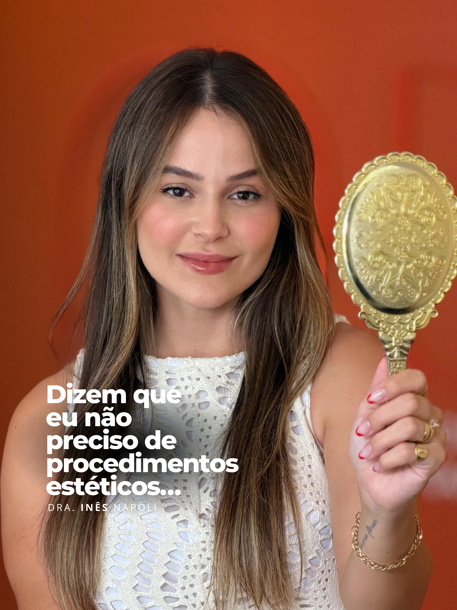

Dra. Inês Napoli · Harmonização facial · Jaguaruna/SC
Sob medida, como o seu rosto.
Planejamento individualizado, pensado para a naturalidade. Você conversa com a Dra. Inês, ela avalia o seu caso e propõe o que faz sentido.
Como ela pensa
Cada rosto pede a sua própria medida.
A Dra. Inês fala, nos próprios vídeos, de planejamento individualizado e de naturalidade. A ideia é simples: antes de qualquer decisão, olhar para o rosto como um todo e para o que a pessoa realmente quer.
Ela chama de Full Face IN o planejamento individual do rosto inteiro. Não é um molde pronto que se aplica em todo mundo: é um traçado feito para uma pessoa só.
- Planejamento individualizado
- Objetivo naturalidade
- Atendimento por avaliação
As quatro provas
Uma consulta em quatro provas.
-
A primeira prova é conversar. Você conta o que pensa sobre o seu rosto, o que quer preservar e o que gostaria de mudar. Nada é decidido antes de ouvir.
-
A Dra. avalia o rosto como um todo e traça um plano individual. Cada pessoa tem proporções e prioridades próprias, e o plano parte delas.
-
O plano vira uma proposta explicada com clareza: o que ela recomenda, o que não faz sentido no seu caso e o que fica para depois. Você decide no seu tempo.
-
Como numa roupa sob medida, a conversa continua: ajustes e dúvidas são parte do cuidado. Os resultados variam de pessoa para pessoa.

A consulta
O que esperar da primeira conversa.
Em termos gerais, a primeira consulta é uma avaliação. Sem pressa e sem decisão obrigatória.
- Conversa
- o que você pensa, sente e espera em relação ao seu rosto
- Avaliação
- um olhar individual, do rosto inteiro, com explicações claras
- Possibilidades
- o que faz sentido no seu caso e o que não faz
- Decisão
- sua, no seu tempo, sem compromisso de seguir adiante
- Agenda
- combinada pelo WhatsApp; endereço e horários, no contato
Dúvidas
Perguntas que todo mundo faz.
A naturalidade é o que o planejamento individualizado busca. Mas não é uma garantia: o que é possível depende da avaliação do seu caso, e a Dra. explica isso com clareza antes de qualquer decisão.
É uma avaliação: conversa, olhar para o rosto como um todo e explicação das possibilidades. Duração, valores e demais detalhes você confirma pelo WhatsApp.
Não precisa. Levar suas dúvidas e o que mais te incomoda já ajuda. O planejamento nasce da conversa, não de uma lista pronta.
Por uma mensagem curta no WhatsApp. Endereço e horários são informados no contato.
Dra. Inês Napoli
Harmonização facial · Jaguaruna/SC
@drainesnapoli